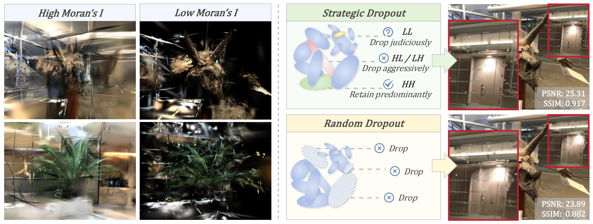
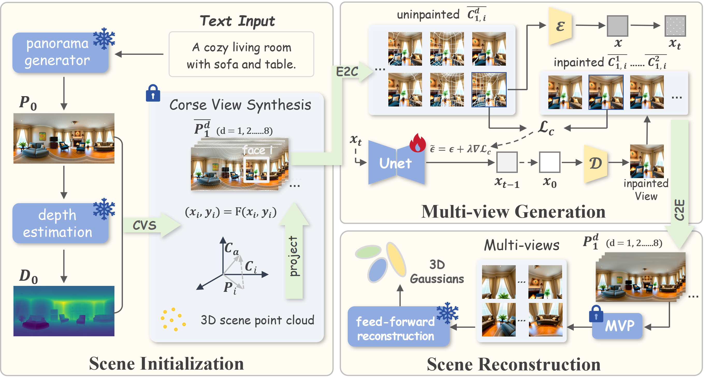
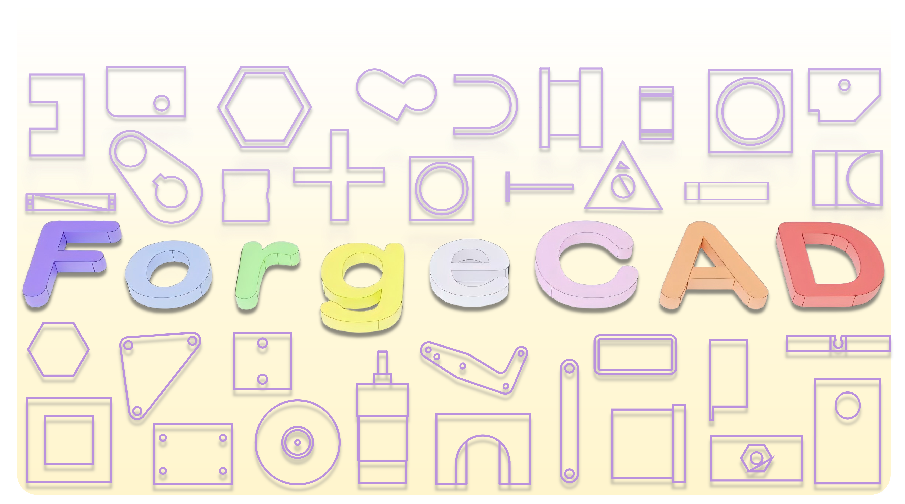
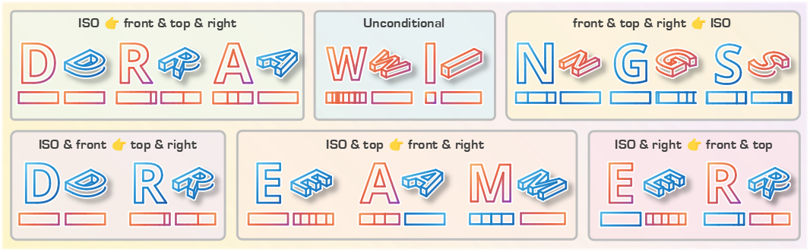
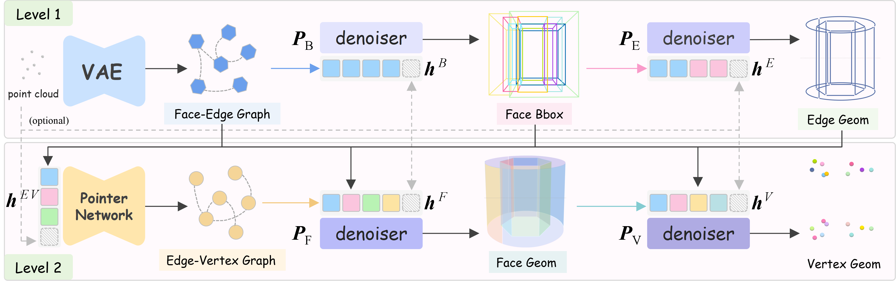

Papers
Selected work



Personal Homepage
Greetings! I am a master's student at the School of Intelligent Systems Engineering,
Sun Yat-sen University, Shenzhen.
My works focus on 3D computer vision,
static and dynamic scene reconstruction, and 3D AIGC.
During my master's degree, I am jointly advised by Professor Zhi Jin and Gang Chen. My research group is FVL of SYSU.




